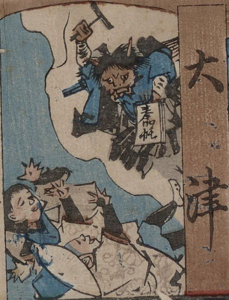

法衣を着た大津絵の鬼が右手に持った撥で人を脅かし、左手に奉加帳を持っている。
著作者：梅堂國政／出典：親書誌：U426_nichibunken_0434：どおけ東海道五十三次雙六／日付：2017／資源識別子：U426_nichibunken_0434_0001_0005
Copyright (c)2010- International Research Center for Japanese Studies, Kyoto, Japan. All rights reserved.